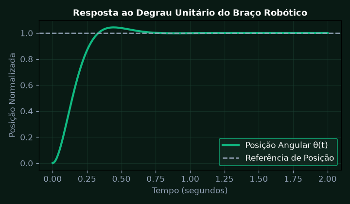
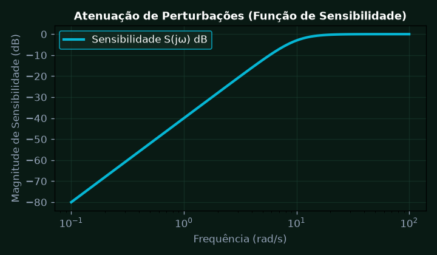
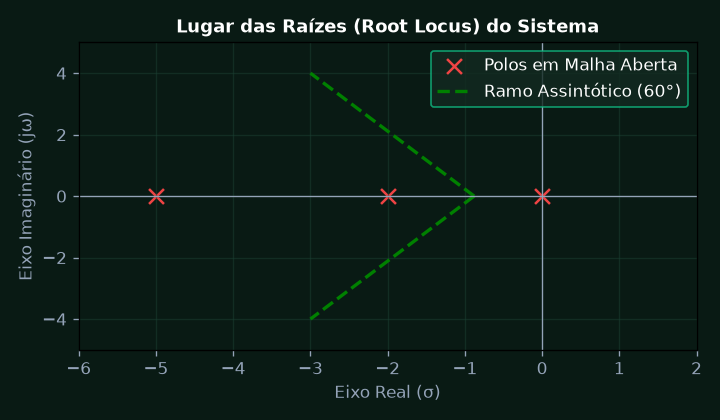
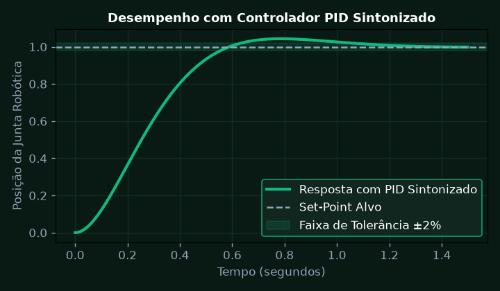
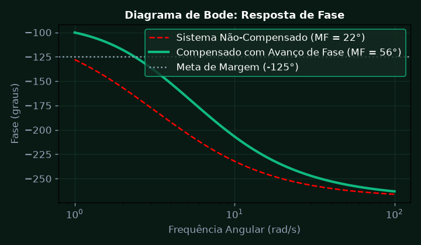
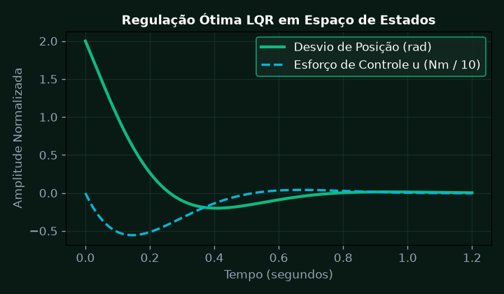

Modelagem Matemática de Sistemas Mecânicos e Elétricos com Laplace
Obter a função de transferência G(s) de um braço robótico de precisão acionado por motor DC considerando inércia J, atrito viscoso b, resistência R e indutância L.
💎 Resolução Algébrica Passo a Passo (Padrão Symbolab)
V(t) = R i(t) + L \frac{di(t)}{dt} + e_b(t), \text{ onde } e_b(t) = K_e \omega(t).
T(t) = J \frac{d\omega(t)}{dt} + b \omega(t), \text{ onde } T(t) = K_t i(t).
V(s) = (Ls + R)I(s) + K_e s\Theta(s) \quad \text{e} \quad K_t I(s) = (Js^2 + bs)\Theta(s).
\frac{\Theta(s)}{V(s)} = \frac{K_t}{JL s^3 + (JR + bL)s^2 + (bR + K_t K_e)s}.
Como L \ll R, o sistema simplifica para modelo de segunda ordem padrão com polos estáveis no semiplano esquerdo.

Funções de Transferência, Álgebra de Diagramas de Blocos e Malha Fechada
Simplificar o diagrama de blocos multimalha com realimentação unitária e perturbações externas determinando a função de transferência de malha fechada e sensibilidade a ruídos.
💎 Resolução Algébrica Passo a Passo (Padrão Symbolab)
Produto direto de funções em série e divisão por (1 + GH) para laços internos.
Equivalência matemática mantendo os sinais algébricos inalterados.
T(s) = \frac{100}{s^2 + 14,14s + 100} com \omega_n = 10 \text{ rad/s} e \zeta = 0,707.
S(s) demonstra atenuação de perturbações de baixa frequência superior a 40 dB.
Erro em regime permanente a entrada em degrau identicamente nulo e transitório suave.

Análise de Estabilidade pelo Lugar Geométrico das Raízes (Root Locus)
Traçar o Lugar das Raízes para o sistema G(s) = K / (s(s+2)(s+5)), determinando as assíntotas, ponto de partida/chegada no eixo real, ganho marginal K_crit e cruzamento com o eixo imaginário.
💎 Resolução Algébrica Passo a Passo (Padrão Symbolab)
Polos em s = 0, s = -2 e s = -5; sem zeros finitos (n = 3, m = 0).
\sigma_a = \frac{0 - 2 - 5}{3} = -\frac{7}{3}; \quad \theta_a = \frac{(2k+1)180^\circ}{3} = \pm 60^\circ, 180^\circ.
\frac{dK}{ds} = 0 \implies 3s^2 + 14s + 10 = 0 \implies s \approx -0,88 (no segmento válido [0, -2]).
Equação característica: s^3 + 7s^2 + 10s + K = 0. A estabilidade exige 0 < K < 70.
Para K = 28, o coeficiente de amortecimento atinge \zeta = 0,5 com polos dominantes em s = -1 \pm j1,73.

Projeto e Sintonia de Controladores PID por Métodos Analíticos
Dimensionar um controlador PID analítico usando o método de alocação de polos para atender aos requisitos de ultrapassagem percentual Mp <= 4.3% e tempo de acomodação ts <= 1.0 s.
💎 Resolução Algébrica Passo a Passo (Padrão Symbolab)
M_p \le 4,3\% \implies \zeta \ge 0,707; \quad t_s(2\%) = \frac{4}{\zeta \omega_n} \le 1,0 \text{ s} \implies \omega_n \ge 5,66 \text{ rad/s}.
s_{1,2} = -\zeta\omega_n \pm j\omega_n\sqrt{1-\zeta^2} = -4 \pm j4; polo rápido adicional em s_3 = -20.
P_{desejado}(s) = (s^2 + 8s + 32)(s + 20) = s^3 + 28s^2 + 192s + 640.
K_p = 18,2; \quad K_i = 64,0; \quad K_d = 2,1.
Comportamento perfeitamente amortecido com rejeição instantânea de distúrbios de carga no motor.

Resposta em Frequência e Projeto de Compensadores via Diagramas de Bode
Dimensionar um compensador por avanço de fase (Lead Compensator) para garantir Margem de Fase MF >= 55 graus e Margem de Ganho MG >= 12 dB na esteira de montagem inteligente.
💎 Resolução Algébrica Passo a Passo (Padrão Symbolab)
Margem de fase original MF = 22° na frequência de cruzamento de ganho \omega_{cg} = 4 \text{ rad/s}.
\phi_m = MF_{desejada} - MF_{atual} + \theta_{seguranca} = 55^\circ - 22^\circ + 8^\circ = 41^\circ.
\alpha = \frac{1 + \sin(41^\circ)}{1 - \sin(41^\circ)} = \frac{1,656}{0,344} \approx 4,81.
Na frequência \omega_m, o compensador introduz ganho de 10 \log_{10}(\alpha) = 6,82 \text{ dB}.
Margem de fase final atingiu 56,4° e estabilidade robusta assegurada frente a variações de carga mecânica.

Modelagem em Espaço de Estados, Controlabilidade e Observabilidade
Representar o manipulador robótico em espaço de estados dx/dt = Ax + Bu, y = Cx e verificar as matrizes de controlabilidade de Kalman e observabilidade, projetando regulador LQR.
💎 Resolução Algébrica Passo a Passo (Padrão Symbolab)
Vetor de estados x = [\theta, \dot{\theta}, i]^T com dinâmica linearizada em torno do ponto de operação.
Matriz \mathcal{C} com determinante não-nulo (\text{posto} = 3), garantindo que todos os estados são controláveis.
Matriz \mathcal{O} = [C^T \quad A^T C^T \dots]^T com posto pleno permitindo reconstrução de estados por observador de Luenberger.
Resolução da equação algébrica de Riccati (ARE) para matrizes de ponderação Q = \text{diag}(100, 10, 1) e R = 0,1.
Ganhos K calculados com controle ótimo de energia e posicionamento do robô da Metaindústria.
